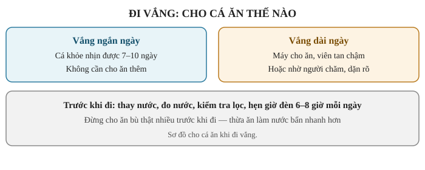

Cho cá ăn khi đi vắng: nhịn ăn, máy cho ăn, nhờ người chăm và lỗi thường gặp
Tác giả: Ruler
Đi vắng vài ngày là lúc người mới nuôi cá lo nhất, và lo đúng chỗ: cá cần ăn, nhưng không có ai ở nhà cho ăn. Điều ít người ngờ là nguy hiểm lớn nhất trong những ngày đó thường không phải là cá đói, mà là cá bị cho ăn quá nhiều — hoặc trước khi bạn đi, hoặc bởi người bạn nhờ chăm hộ. Một bữa ăn gấp đôi trước giờ đi, một hộp thức ăn để nguyên cho người chăm tự lấy, hay một viên thức ăn tan chậm thả vào bể nhỏ đều có thể làm nước bẩn nhanh hơn nhiều so với việc cá nhịn ăn vài ngày.
Bài này viết cho bể cộng đồng nước ngọt đã chạy lọc xong, nuôi cá trưởng thành khỏe mạnh theo 10 loại cá cảnh dễ nuôi nhất cho người mới. Bài không viết lại quy tắc cho ăn đầy đủ, vì quy tắc đó đã có ở Cho cá cảnh ăn đúng cách: bao nhiêu, mấy lần và lỗi thường gặp: cho ăn một hoặc hai lần mỗi ngày, chỉ cho lượng cá ăn hết trong 2–3 phút, vớt thức ăn thừa sau 5 phút. Bài này chỉ dùng các con số đó làm mốc để quyết định khi đi vắng, và chỉ ra khi nào bạn không cần làm gì thêm, khi nào cần máy cho ăn hoặc người chăm, và khi nào cần nhờ người có kinh nghiệm.
Chu trình nitơ chỉ được nhắc ngắn ở đây, vì đã giải thích đầy đủ ở Cách xử lý nước mới trước khi thả cá: thức ăn thừa phân hủy thành amoniac, vi khuẩn trong lọc xử lý amoniac thành nitrit rồi thành nitrat, và nước trong không có nghĩa là nước an toàn. Khi bạn đi vắng, không ai đo nước và thay nước, vì vậy mọi quyết định cho ăn trong bài này đều tính tới việc thức ăn thừa sẽ ở lại trong bể cho tới khi bạn về.
Cá trưởng thành khỏe mạnh nhịn ăn được bao lâu

Câu trả lời ngắn là: lâu hơn bạn nghĩ, nhưng không phải loài nào cũng giống nhau, và không phải bể nào cũng giống nhau. Aqueon ghi lại thói quen của một số người nuôi: để cá nhịn ăn một hoặc hai ngày trong tuần cho hệ tiêu hóa nghỉ ngơi, và cá lớn, ít vận động có thể nhịn ăn lâu hơn cá nhỏ, năng động. Cá ăn thực vật kiếm ăn suốt ngày nên cần cho ăn thường xuyên hơn, nhưng mỗi lần ít hơn. Cá nhỏ và hiếu động — ví dụ cá ngựa vằn hay cá con vừa nở — đốt năng lượng nhanh hơn, vì vậy cần ăn nhiều bữa nhỏ trong ngày, đặc biệt khi nước ấm. Nhiệt độ nước điều chỉnh tốc độ trao đổi chất của cá, vì vậy cùng một loài cá, ở nước ấm hơn sẽ cần ăn thường xuyên hơn ở nước mát hơn.
Hướng dẫn đi vắng của MonitorAkwarum, một trang hướng dẫn chăm bể, đưa ra bảng theo số ngày đi như sau: đi tới 4 ngày thì không cần làm gì, đừng cho ăn thêm trước khi đi; đi 5–7 ngày thì cá trưởng thành khỏe mạnh không cần cho ăn, còn cá con và cá non thì cần; đi 1–2 tuần thì dùng máy cho ăn tự động hoặc nhờ người chăm với thức ăn đã chia sẵn từng phần; đi hơn 2 tuần thì nhờ người chăm ghé mỗi 2–3 ngày để cho ăn, kiểm tra thiết bị và bù nước bay hơi. Trang này cũng viết trong phần hỏi đáp rằng cá trưởng thành khỏe mạnh thường nhịn được 7–10 ngày, còn cá con và cá rất nhỏ thì ít hơn nhiều.
Hai nguồn trên không mâu thuẫn nhau nếu hiểu đúng vai trò của chúng. Aqueon nói về việc nhịn ăn có kế hoạch ở nhà, một hoặc hai ngày mỗi tuần, trong khi bạn vẫn ở nhà quan sát cá và đo nước. MonitorAkwarum nói về việc đi vắng, khi không có ai quan sát và đo nước, và bảng của họ áp dụng cho cá trưởng thành khỏe mạnh trong bể đã ổn định. Bài này dùng bảng của MonitorAkwarum làm mốc quyết định theo số ngày đi, và dùng lưu ý của Aqueon để nhớ các trường hợp ngoại lệ: cá con mới nở, cá đang bệnh, cá mới thả về và cá ăn thực vật cần có phương án riêng, không thể áp dụng chung một mốc nhịn ăn cho cả bể.
Một điểm cần nói rõ: nhịn ăn vài ngày không phải là bỏ đói cá, mà là tận dụng khả năng tự nhiên của cá. Trong tự nhiên, cá không được ăn đều đặn mỗi ngày như trong bể, và Aqueon viết có loài cá ăn thịt chỉ ăn khi bắt được mồi, có khi nhiều ngày mới ăn một bữa. Điều đó không có nghĩa là bạn nên để cá nhịn ăn thường xuyên, mà có nghĩa là một kỳ nghỉ cuối tuần không cho ăn không làm hại cá trưởng thành khỏe mạnh, miễn là trước đó cá được cho ăn bình thường và nước đang sạch. Cá của bạn có nhịn được hay không phụ thuộc vào tình trạng của chính bể bạn: bể đã chạy lọc xong, amoniac và nitrit ở 0 mg/L theo RSPCA, cá ăn uống bình thường trong tuần trước khi đi. Nếu bể của bạn chưa đạt các điều kiện đó, hãy xử lý nước trước, đừng trông chờ vào việc cá "chịu đựng được".
Tuần trước khi đi: chuẩn bị bể, đừng chuẩn bị thức ăn thừa
Việc chuẩn bị quan trọng nhất không diễn ra vào ngày đi, mà diễn ra trong tuần trước đó. MonitorAkwarum khuyên làm lần thay nước lớn hơn lần cuối vào 2–4 ngày trước khi đi, không làm vào phút cuối, để nếu có vấn đề gì sau lần thay nước thì bạn vẫn còn ở nhà để phát hiện. Thay nước cho bể cá đúng cách: bao nhiêu, bao lâu và lỗi thường gặp đã viết cách thay nước đúng: thay 10% mỗi tuần hoặc 25% mỗi hai tuần, nước mới đã khử clo và cloramin, đúng nhiệt độ với nước bể. Lần thay nước trước chuyến đi vẫn làm theo đúng cách đó, chỉ khác là làm sớm hơn vài ngày thay vì làm vào sáng hôm đi.
Lọc thì làm sớm hơn nữa, hoặc để tới khi bạn về. MonitorAkwarum viết hãy vệ sinh lọc ít nhất một tuần trước khi đi, hoặc chờ tới khi bạn về mới vệ sinh. Lý do giống như Vệ sinh lọc và nền bể không làm mất vi khuẩn có lợi đã viết: vệ sinh lọc làm xáo trộn vi khuẩn, và bể cần vài ngày để ổn định lại sau đó. Vệ sinh lọc vào ngày đi, rồi bỏ bể lại một tuần không ai đo nước, là cách tạo ra vấn đề mà không có ai ở nhà để phát hiện. Nếu dòng nước ra khỏi lọc vẫn mạnh và các chỉ số nước vẫn ổn định, hãy để lọc yên cho tới khi bạn về.
Cũng trong hai tuần trước chuyến đi, đừng thả thêm cá mới hay cây mới vào bể. MonitorAkwarum khuyên không thêm cá mới hay cây mới trong 2 tuần trước chuyến đi, vì cá mới cần thời gian làm quen và có thể mang theo vấn đề mà bạn chưa kịp phát hiện, còn cây mới có thể rữa lá làm bẩn nước khi không có ai dọn. Nếu bạn đã mua cá mới, hãy nuôi cá đó ở bể riêng hoặc hoãn việc thả vào bể chính tới sau chuyến đi.
Đèn thì đặt hẹn giờ. MonitorAkwarum khuyên đặt đèn hẹn giờ 6–7 giờ mỗi ngày trong checklist chuẩn bị, và trong phần hỏi đáp thì ghi 6–8 giờ mỗi ngày, với lý do đèn sáng liên tục nuôi rêu tảo, còn tối liên tục thì hại cây. Bài này dùng khoảng 6–8 giờ làm mốc, vì hai con số trong cùng một nguồn chỉ khác nhau một giờ và đều ngắn hơn chu kỳ sáng 8–10 giờ hằng ngày mà RSPCA khuyên cho bể có người ở nhà. Nếu bể của bạn không có cây, đèn chủ yếu để bạn ngắm cá, thì trong những ngày đi vắng bạn có thể đặt đèn sáng ít giờ hơn nữa, miễn là cá vẫn có chu kỳ sáng tối rõ ràng. Đừng để đèn sáng suốt ngày đêm trong lúc bạn đi vắng, và cũng đừng tắt đèn hoàn toàn cả tuần nếu bể có cây.
Trước khi đi một ngày, hãy đo nước một lần nữa và ghi lại kết quả. RSPCA viết mức an toàn cho amoniac và nitrit là 0 mg/L cho cả hai, và nếu chỉ số cao hơn thì cần thay một nửa nước mỗi ngày cho tới khi điều kiện cải thiện. Nếu lần đo trước chuyến đi cho thấy amoniac hoặc nitrit trên 0, đừng đi với hy vọng bể sẽ tự ổn trong lúc bạn vắng nhà — hãy thay nước và giảm cho ăn theo hướng dẫn khẩn cấp trong Thay nước cho bể cá đúng cách: bao nhiêu, bao lâu và lỗi thường gặp, và hoãn việc giao bể cho máy cho ăn hay người chăm cho tới khi nước đã về 0. Một bể nước đang có vấn đề mà không có ai đo nước trong một tuần sẽ tệ hơn nhiều so với một bể nước sạch bị bỏ đói vài ngày.
Bốn cách cho cá ăn khi đi vắng
| Cách | Hợp với chuyến đi nào | Ưu điểm | Rủi ro lớn nhất |
|---|---|---|---|
| Không cho ăn | Tới 4 ngày; cá trưởng thành khỏe mạnh tới 5–7 ngày | Không làm bẩn nước, không cần thiết bị hay người giúp | Không hợp với cá con, cá bệnh, cá mới thả |
| Máy cho ăn tự động | 1–2 tuần | Cho ăn đúng giờ, đúng lượng đã đặt sẵn | Kẹt máy, thức ăn vón cục do ẩm, hết pin |
| Viên thức ăn tan chậm | Khoảng 3–7 ngày, tùy loại viên | Không cần điện, không cần người giúp | Tan không đúng lịch, làm đục nước |
| Nhờ người chăm | Mọi chuyến đi, nhất là trên 2 tuần | Có người nhìn bể, phát hiện sự cố | Người chăm cho ăn quá nhiều |
Bảng trên tổng hợp từ MonitorAkwarum và hướng dẫn cho ăn của Aqueon. Không có cách nào tốt nhất cho mọi chuyến đi: cách đúng là cách hợp với số ngày bạn đi, với cá bạn đang nuôi và với bể của bạn.
Không cho ăn là cách đơn giản nhất và an toàn nhất cho chuyến đi ngắn. Theo bảng của MonitorAkwarum, đi tới 4 ngày thì không cần làm gì, đừng cho ăn thêm trước khi đi; đi 5–7 ngày thì cá trưởng thành khỏe mạnh không cần cho ăn. Điều kiện là cá trưởng thành, khỏe mạnh, bể đã ổn định và trước khi đi cá được cho ăn bình thường. Cá con mới nở, cá đang bệnh và cá mới thả về không thuộc nhóm này: Aqueon lưu ý cá con vừa nở đốt năng lượng rất nhanh nên cần ăn nhiều bữa trong ngày, vì vậy bể có cá con cần người chăm hoặc máy cho ăn, không thể bỏ đói cả tuần.
Máy cho ăn tự động là cách hợp nhất cho chuyến đi 1–2 tuần. MonitorAkwarum viết hãy thử máy cho ăn 1–2 tuần trước chuyến đi và đặt lượng nhỏ, vì hơi ẩm từ bể có thể làm thức ăn vón cục. Việc thử trước quan trọng hơn việc mua máy đắt tiền: một chiếc máy chưa từng chạy thử có thể kẹt và không thả thức ăn, hoặc thả quá nhiều thức ăn trong một lần, và bạn sẽ không biết cho tới khi về nhà. Trong tuần thử, hãy để máy chạy đúng lịch bạn định dùng khi đi vắng, và quan sát lượng thức ăn mỗi lần máy thả: cá có ăn hết trong 2–3 phút không, có thức ăn thừa sau 5 phút không. Nếu máy thả quá nhiều, hãy giảm lượng đặt sẵn xuống mức nhỏ nhất rồi mới tăng dần, vì cho ăn thiếu một chút trong một tuần ít hại hơn cho ăn thừa làm bẩn nước. Máy cho ăn thường chỉ dùng được thức ăn khô dạng cám hoặc viên, vì vậy nếu cá của bạn chỉ ăn thức ăn đông lạnh hay thức ăn tươi sống thì máy không phải là phương án phù hợp, và bạn nên nhờ người chăm thay vì mua máy.
Viên thức ăn tan chậm là cách đơn giản thứ hai, nhưng là cách khó kiểm soát nhất. MonitorAkwarum viết rõ viên thức ăn tan chậm thường làm bẩn nước, vì vậy máy cho ăn hoặc người chăm vẫn tốt hơn. Viên tan theo lịch của chính nó, không theo lịch ăn của cá: trong nước ấm viên tan nhanh hơn, trong bể nhỏ viên làm đục nước rõ hơn, và cá có thể không ăn hết phần thức ăn viên nhả ra trong một lúc. Aqueon bán viên thức ăn tan chậm loại 3 ngày và loại 7 ngày, và theo trang bán hàng của hãng thì một viên loại 7 ngày ghi dùng cho 5–6 con cá cỡ vừa trong tối đa 7 ngày. Nếu bạn dùng viên, hãy chọn loại đúng với số ngày đi và số cá trong bể, đừng thả viên 7 ngày cho chuyến đi cuối tuần, và khi về hãy thay nước và hút phần viên còn lại ra như hướng dẫn trên bao bì. Viên không phải là phương án cho chuyến đi dài, và không thay thế được người chăm khi bể có cá con hay cá đang bệnh.
Nhờ người chăm là cách duy nhất có người nhìn bể trong lúc bạn vắng nhà, và vì vậy là cách tốt nhất cho chuyến đi dài. Nhưng người chăm cũng là nguồn rủi ro lớn nhất nếu họ cho ăn quá nhiều. MonitorAkwarum viết thẳng: cho ăn quá nhiều bởi người chăm còn nguy hiểm hơn vài ngày nhịn ăn. Vì vậy việc nhờ người chăm không phải là nhờ họ "cho cá ăn giúp", mà là nhờ họ làm đúng một việc đã được chia sẵn, và không làm thêm việc gì khác.
Nhờ người chăm đúng cách: chia sẵn, dặn ngắn, giấu hộp thức ăn
Nếu bạn nhờ người chăm, hãy làm ba việc trước khi đi. Thứ nhất, chia sẵn thức ăn thành từng phần cho mỗi lần ghé, ví dụ dùng hộp chia thuốc có ngăn theo ngày, và ghi rõ mỗi ngăn dùng cho ngày nào. MonitorAkwarum khuyên chuẩn bị phần ăn cho từng ngày và dặn người chăm đừng cho thêm. Thứ hai, giấu hộp thức ăn chính đi, chỉ để lại các phần đã chia sẵn. Người chăm có ý tốt thường cho thêm "một nhúm nữa cho chắc", và một nhúm thêm mỗi ngày trong một tuần là đủ làm nước bẩn nặng. Thứ ba, dặn bằng giấy, dán cạnh bể, không dặn bằng miệng rồi hy vọng người ta nhớ. Giấy dặn nên có: cho ăn bao nhiêu và khi nào, không cho thêm dù cá có vẻ đói, nếu cá chết thì vớt ra bằng vợt, nước bay hơi thì bù bằng nước nào và bù bao nhiêu, số điện thoại của bạn và của một người biết nuôi cá.
MonitorAkwarum cũng khuyên ghi rõ trong giấy dặn: nếu cá chết thì vớt ra, khi nào và bằng nước gì thì bù nước bay hơi, và số điện thoại của bạn cùng số của một người biết về cá. Người chăm không cần biết cách chữa bệnh cho cá, và cũng không nên tự ý cho thuốc hay thay nước lớn khi bạn vắng nhà. Việc của họ là cho ăn đúng phần đã chia, nhìn bể và gọi cho bạn khi có gì lạ. Nếu bể có dấu hiệu nặng — cá chết nhiều, nước đục nặng, thiết bị dừng chạy — người chăm nên gọi cho bạn hoặc cho cửa hàng thủy sinh, chứ không nên tự xử lý bằng cách thay gần hết nước hay cho thuốc vào bể.
Về tần suất ghé, MonitorAkwarum viết với chuyến đi hơn 2 tuần thì nhờ người chăm ghé mỗi 2–3 ngày để cho ăn, kiểm tra thiết bị và bù nước. Với chuyến đi 1–2 tuần dùng máy cho ăn, bạn vẫn nên nhờ một người ghé ít nhất một lần giữa chuyến đi để nhìn bể, vì máy cho ăn không phát hiện được lọc dừng chạy hay sưởi hỏng. Người chăm ghé để nhìn bể là có ích ngay cả khi họ không cần cho ăn: họ thấy cá có bơi bình thường không, nước có đục không, thiết bị có chạy không — những thứ mà không một chiếc máy cho ăn nào nhìn được.
Những việc không nên làm trước khi đi
Đừng cho ăn gấp đôi trước khi đi. Đây là lỗi phổ biến nhất, và cũng là lỗi gây hại nhiều nhất. Người nuôi nghĩ rằng cho cá ăn nhiều trước khi đi sẽ giúp cá "dự trữ" cho những ngày vắng nhà, nhưng cá không dự trữ thức ăn như vậy. Thức ăn thừa phân hủy thành amoniac, và amoniac tăng lên trong lúc không có ai đo nước hay thay nước. Cho cá cảnh ăn đúng cách: bao nhiêu, mấy lần và lỗi thường gặp đã viết rõ: cá trưởng thành khỏe mạnh có thể nhịn ăn cuối tuần, và việc cho ăn quá nhiều trước khi đi vắng còn làm nước bẩn hơn. Hãy cho ăn bình thường vào ngày đi, rồi đi.
Đừng thả viên thức ăn cho chuyến đi cuối tuần. Theo bảng của MonitorAkwarum, đi tới 4 ngày thì không cần làm gì. Một viên tan chậm thả vào bể cho chuyến đi 2–3 ngày là thừa, và phần viên tan ra mà cá không ăn hết sẽ làm bẩn nước trong lúc bạn không có nhà để xử lý.
Đừng vệ sinh lọc vào ngày đi, đừng thả cá mới, đừng đổi thức ăn. Ba việc này đều làm bể mất ổn định trong những ngày không có ai quan sát. Lọc thì vệ sinh ít nhất một tuần trước khi đi hoặc để tới khi về, cá mới và cây mới thì đừng thêm trong 2 tuần trước chuyến đi, và thức ăn thì giữ nguyên loại cá đang ăn quen, đừng đổi sang loại mới với hy vọng cá sẽ thích hơn.
Đừng tắt đèn hoàn toàn và đừng để đèn sáng suốt. Hãy đặt hẹn giờ 6–8 giờ mỗi ngày như MonitorAkwarum khuyên trong phần hỏi đáp, để cây không chết vì tối và rêu tảo không bùng lên vì sáng liên tục. Nếu bạn không có hẹn giờ, hãy nhờ người chăm bật tắt đèn theo giờ bạn dặn, hoặc mua một hẹn giờ cắm điện đơn giản trước chuyến đi và thử nó chạy đúng giờ trong vài ngày.
Khi về nhà: đo nước trước, cho ăn bình thường
Ngày về, việc đầu tiên không phải là cho cá ăn, mà là nhìn bể và đo nước. Hãy đếm cá, nhìn xem cá có bơi bình thường không, kiểm tra lọc và sưởi có chạy không, rồi đo amoniac, nitrit, nitrat và pH. Nếu mọi chỉ số đang ở 0 mg/L và cá bơi bình thường, hãy cho ăn một bữa bình thường theo bài cho cá ăn — một lượng nhỏ, cá ăn hết trong 2–3 phút — rồi mới quay lại lịch cho ăn hằng ngày. Đừng cho ăn gấp đôi để "bù" cho những ngày cá nhịn ăn, vì cá không ăn được gấp đôi chỉ vì bạn cho gấp đôi, và thức ăn thừa sẽ làm bẩn nước ngay sau khi bạn vừa về.
Nếu nước có vấn đề — amoniac hoặc nitrit trên 0, nước đục nặng, có mùi hôi — hãy xử lý theo bài thay nước và Nước bể đục trắng, đục xanh: phân biệt màu nước rồi mới xử lý: thay một phần nước đã khử clo và đúng nhiệt độ, đo lại, giảm cho ăn xuống mức tối thiểu, và lặp lại vào ngày hôm sau nếu chỉ số vẫn trên 0. Nếu máy cho ăn còn thức ăn vón cục trong hộp, hãy đổ bỏ phần thức ăn ẩm đó và vệ sinh máy trước lần dùng sau. Nếu viên thức ăn tan chậm còn sót lại, hãy hút phần còn lại ra và thay nước như hướng dẫn trên bao bì.
Cuối cùng, hãy ghi lại chuyến đi vào sổ: bạn đi bao nhiêu ngày, dùng cách nào, cá về nhà ra sao, nước đo được bao nhiêu. Sau hai ba chuyến đi, sổ sẽ cho bạn biết cách nào hợp với bể của bạn nhất — và lần sau bạn sẽ không phải lo lắng nhiều như lần đầu nữa.
Kết luận
Cho cá ăn khi đi vắng không phải là bài toán cho cá ăn đủ, mà là bài toán giữ nước sạch trong lúc không có ai ở nhà. Cá trưởng thành khỏe mạnh trong bể đã ổn định nhịn ăn cuối tuần không sao, và theo MonitorAkwarum thì thường nhịn được 7–10 ngày; cá con, cá bệnh và cá mới thả là ngoại lệ và cần người chăm hoặc máy cho ăn. Chuyến đi 1–2 tuần thì dùng máy cho ăn đã thử trước 1–2 tuần, hoặc nhờ người chăm với thức ăn đã chia sẵn từng phần. Chuyến đi hơn 2 tuần thì nhờ người chăm ghé mỗi 2–3 ngày. Viên thức ăn tan chậm chỉ là phương án cuối cùng, vì nó tan theo lịch của nó chứ không theo lịch của cá, và thường làm bẩn nước.
Dù chọn cách nào, hãy chuẩn bị bể trước chuyến đi thay vì chuẩn bị thức ăn thừa: thay nước 2–4 ngày trước khi đi, vệ sinh lọc ít nhất một tuần trước hoặc để tới khi về, đừng thêm cá mới trong 2 tuần trước chuyến đi, đặt đèn hẹn giờ 6–8 giờ mỗi ngày, và đo nước một lần cuối trước khi đi. Và khi về, hãy đo nước trước rồi mới cho ăn bình thường. Làm đúng như vậy, chuyến đi của bạn sẽ nhẹ nhàng hơn, và cá của bạn cũng vậy.
Nguồn tham khảo
- Aqueon, "How to Properly Feed Your Fish" — cho ăn một hoặc hai lần mỗi ngày là đủ, chỉ cho lượng cá ăn hết trong 2–3 phút, vớt thức ăn thừa sau 5 phút, một số người nuôi cho cá nhịn ăn một hoặc hai ngày mỗi tuần, cá lớn ít vận động nhịn ăn lâu hơn cá nhỏ năng động, cá con mới nở cần cho ăn thường xuyên hơn, nhiệt độ nước điều chỉnh tốc độ trao đổi chất của cá (truy cập 23/11/2026): https://www.aqueon.com/articles/how-to-properly-feed-your-fish
- MonitorAkwarum, "Fish tank on vacation: leaving it for 1–2 weeks" — đi tới 4 ngày không cần làm gì, đừng cho ăn thêm trước khi đi; đi 5–7 ngày cá trưởng thành khỏe mạnh không cần cho ăn, cá con và cá non thì cần; đi 1–2 tuần dùng máy cho ăn tự động hoặc nhờ người chăm với thức ăn đã chia sẵn; đi hơn 2 tuần nhờ người chăm ghé mỗi 2–3 ngày; cá trưởng thành khỏe mạnh thường nhịn được 7–10 ngày; thay nước lớn hơn lần cuối 2–4 ngày trước khi đi, vệ sinh lọc ít nhất một tuần trước hoặc chờ tới khi về, đừng thêm cá mới hay cây mới trong 2 tuần trước chuyến đi, đặt đèn hẹn giờ 6–7 giờ mỗi ngày, thử máy cho ăn 1–2 tuần trước và đặt lượng nhỏ, hơi ẩm có thể làm thức ăn vón cục, viên thức ăn tan chậm thường làm bẩn nước nên máy cho ăn hoặc người chăm tốt hơn (truy cập 23/11/2026): https://monitorakwarium.org/en/guides/aquarium-vacation/
- RSPCA, "Choosing an Aquarium for Pet Fish" — mức an toàn cho amoniac và nitrit là 0 mg/L cho cả hai, nếu chỉ số cao hơn thì thay một nửa nước mỗi ngày cho tới khi điều kiện cải thiện; đèn 8–10 giờ mỗi ngày; kiểm tra nước mỗi hai tuần, bộ test amoniac và nitrit là thiết yếu (truy cập 23/11/2026): https://science.rspca.org.uk/en/web/rspca/adviceandwelfare/pets/fish/environment
- Các bài liên quan trong website này: cách xử lý nước mới trước khi thả cá (chu trình nitơ), cho cá cảnh ăn đúng cách: bao nhiêu, mấy lần và lỗi thường gặp (cho ăn đúng cách), thay nước cho bể cá đúng cách: bao nhiêu, bao lâu và lỗi thường gặp (thay nước), vệ sinh lọc và nền bể không làm mất vi khuẩn có lợi (vệ sinh lọc và nền bể), cá bỏ ăn, bơi lờ đờ, cạ mình: checklist chẩn đoán nhanh trước khi mua thuốc (checklist khi cá có dấu hiệu lạ), lịch chăm sóc bể cá theo tuần và theo tháng: việc hằng ngày, hằng tuần, hằng tháng (lịch chăm sóc theo tuần và theo tháng).